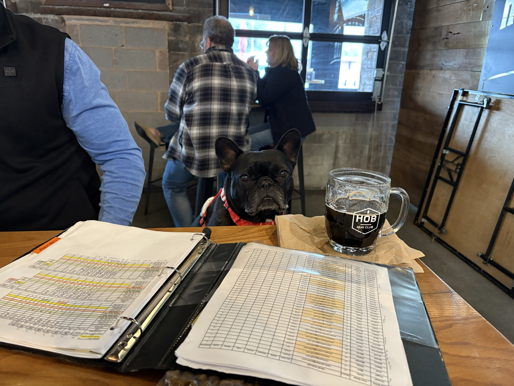
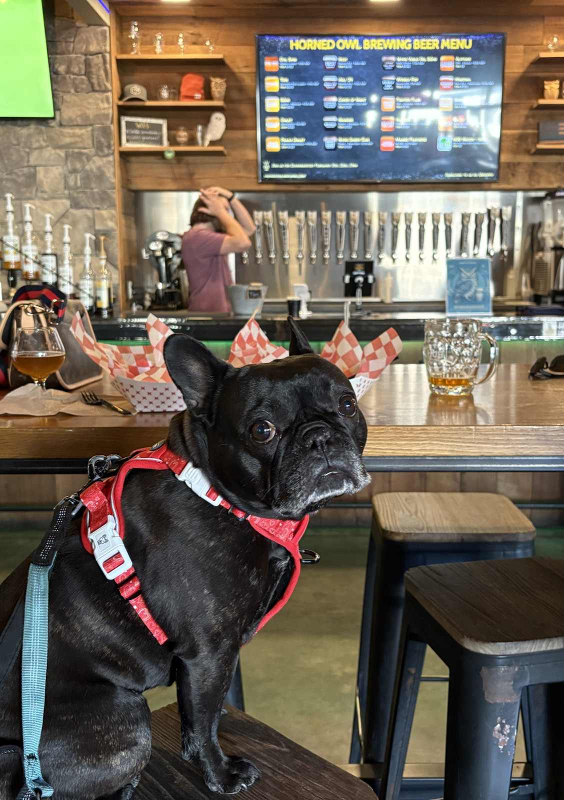
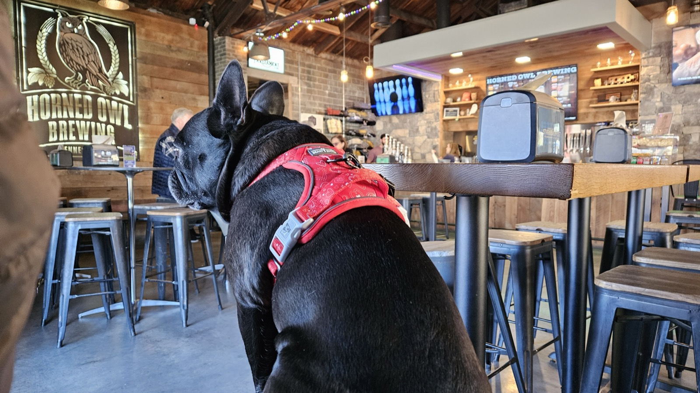

"Over the last year, Horned Owl Brewing has quickly become MY favorite brewery close to home."
Hey there, hoomans! It's me, Palmer, your favorite beer-loving French bulldog and self-proclaimed connoisseur of all things tasty! Over the last year, Horned Owl Brewing (HOB) has quickly become MY favorite brewery close to home. I mean, it's got all the five paws in all the categories—yes, I'm counting my paws, and yes, I'm a little biased, but who wouldn't be when you're this fabulous?
Let's start with the most important topic: BEER! The beer at HOB gets all the paws, and I'm not just barking up the wrong tree here. They're cranking out new brews faster than a labrador can chase its tail, and with about 12-14 beers on tap at any given time, there's something for every human palate. My humans are all about those IPAs. They rave about Poncho (which is zippy with a little jalapeño—perfect for those spicy taco nights!), Snow Owl, Raptor (because who doesn't want to drink like a dinosaur?), and Mango Feathers. If you're looking for something lighter, The Owlet is a great all-day sipper. Trust me, we've verified that is the case—multiple times. Quality control, you know?
Now, let's lump treats, atmosphere, and the staff together because from my doggie perspective, this is where the real magic happens at HOB. The staff gets so many paws up, I'm surprised they don't have a fan club! They're not just dog-friendly; they're dog-obsessed! They remember the humans who come in and even the beers they like. I mean, they know my humans better than I do! And did I mention they're great at checking in to see if you need another beer? They're like my personal butlers, but with less bowing and more belly rubs.
Speaking of belly rubs, I have two personal favorite humans at HOB that I know by name. When my humans say, "Want to go see Preston or Nick?" it's always a resounding YES! I practically leap off the couch like I'm auditioning for the dog Olympics. And let's not forget about Emily and Stacia—those ladies are treat dispensers in disguise! I'm convinced they have a secret stash of goodies just for me.
So, if you're looking for a place that serves up great beer, friendly staff, and treats that make my tail wag like a windmill, Horned Owl Brewery is the place to be! Just remember to bring your best furry friend along—because what's better than sipping a cold one while your dog is living their best life? Cheers to good times, great brews, and endless belly rubs! 🐾🍻



